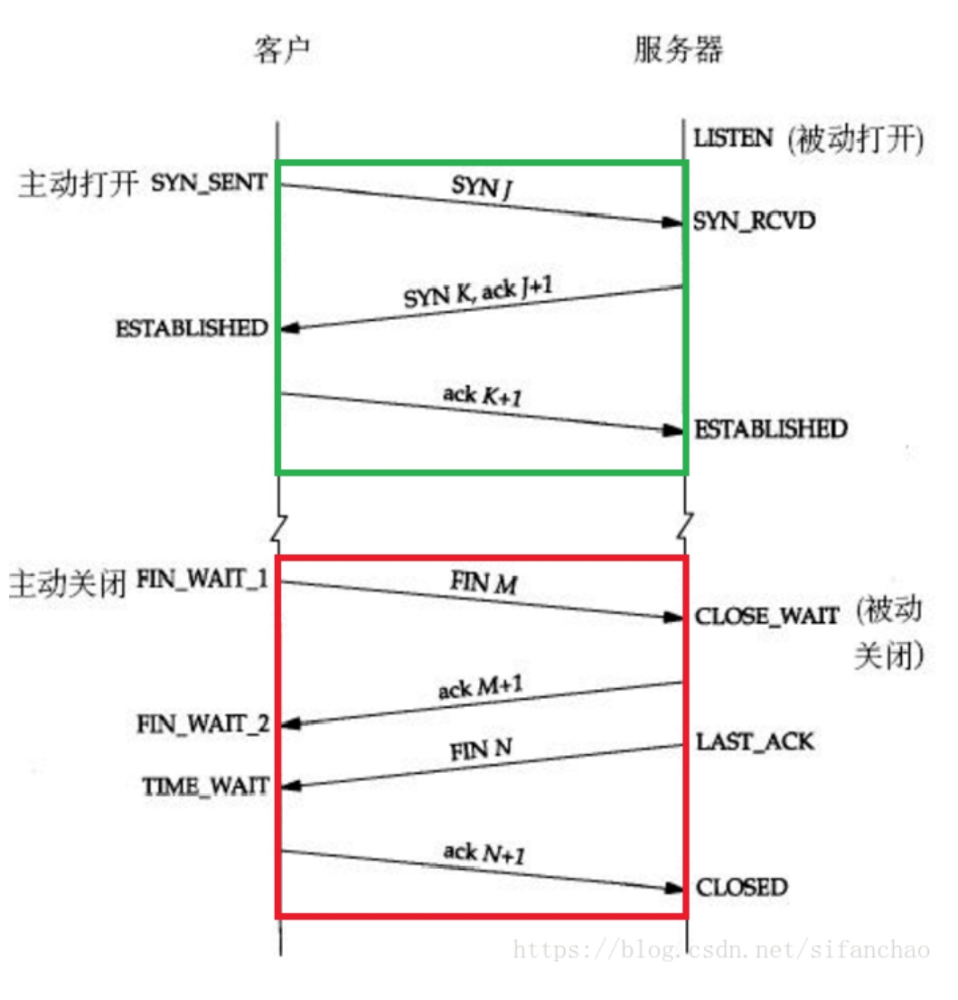
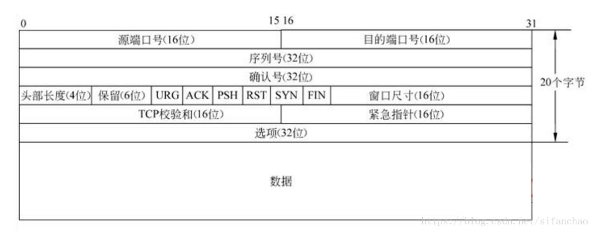

TCP
TCP(Transmission Control Protocol 传输控制协议)
UDP协议和TCP协议都是传输层协议。
TCP提供的是面向连接，可靠的字节流服务。即客户和服务器交换数据前，必须现在双方之间建立一个TCP连接，之后才能传输数据。并且提供超时重发，丢弃重复数据，检验数据，流量控制等功能，保证数据能从一端传到另一端。
TCP 是面向连接的协议,也就是说在收发数据前必须要和对方建立可靠的连接.
TCP 连接需要经过三次握手才能建立
3 次握手

TCP 三次握手过程:
- 主机 A 通过向主机 B 发送一个含有同步序列号的标志位的数据段给主机 B,向 B 请求建立连接,同时通过这个数据主机 A 向主机 B 说明两件事:1,我想要和你通信;2,你可以用哪个序列号作为起始数据段来回应我
- 主机 B 收到 A 的请求后,用一个带有确认应答(ACK)和同步序列号(SYN)标志位的数据段响应主机 A.同时也告诉 A 两件事:1,我已经收到你 的请求了,你可以传输数据了;你要用哪个序列号作为起始数据段来回应我
- 主机 A 收到这个数据段后,再发送一个确认应答,确认已收到 B 的数据段:我已收到回复,我现在要开始传输实际数据了
这样 3 次握手就完成,主机 A 和 B 之间就可以传输数据了
3 次握手的特点:
- 没有应用层的数据
- SYN 这个标志位只有在 TCP 建立连接时才会被置1
- 握手完成之后,SYN 标志位被置 0
4 次挥手
TCP 建立连接要进行 3 次握手,断开连接要进行 4 次挥手
- 当主机 A 完成数据传输后,将控制位 FIN 置 1,提出停止 TCP 连接的请求
- 主机 B 收到 FIN 后对其作出相应,确认这一方向上的 TCP 连接将关闭,将 ACK 置 1
- 由主机 B 再提出反方向的关闭请求,将 FIN 置 1
- 主机 A 对 B 的请求确认,将 ACK 置 1,双方向的关闭结束.
TCP 的可靠传输
TIME_WAIT状态
TCP协议规定,主动关闭连接的一方要处于TIME_ WAIT状态,等待两个MSL(最大报文生存周期)的时间后才能回到CLOSED状态。
TIME_WAIT持续存在2MSL的话，就能保证在两个传输方向上的尚未被接收或迟到的报文段都已经消失(否则服务器立刻重启, 可能会收到来自上一个进程的迟到的数据, 但是这种数据很可能是错误的)。
同时也是在理论上保证最后一个报文可靠到达(假设最后⼀一个ACK丢失, 那么服务器会再重发一个 FIN.。这时虽然客户端的进程不在了, 但是TCP连接还在, 仍然可以重发LAST_ACK)。
- 确认应答机制&&序列号
TCP将每个字节的数据都进行了编号，即为序列号。
每一个ACK都带有对应的确认序列号，意思是告诉发送者，我已经收到了哪些数据;；下一次你从哪里开始发。 超时重传&&序列号
主机A发送数据给B之后, 可能因为网络拥堵等原因, 数据无法到达主机B; 如果主机A在一个特定时间间隔内没有收到B发来的确认应答, 就会进行重发;
主机A未收到B发来的确认应答，也可能是因为ACK丢失了，因此主机B会收到很多重复数据.。那么TCP协议需要能够识别出那些包是重复的包,，并且把重复的丢弃掉.，这时候我们可以利用序列号, 就可以很容易做到去重的效果。拥塞控制
每次发送数据包的时候, 将拥塞窗口和接收端主机反馈的窗口大小做比较, 取较小的值作为实际发送的窗口。
拥塞控制, 归根结底是TCP协议想尽可能快的把数据传输给对方, 但是又要避免给网络造成太大压力的折中方案。
提高传输效率：滑动窗口、流量控制、延迟应答、捎带应答
滑动窗口机制:
- 窗口大小指的是无需等待确认应答而可以继续发送数据的最大值.
- 发送窗口内字段的时候, 不需要等待任何ACK, 直接发送;
- 收到第一个ACK后, 滑动窗口向后移动, 继续发送下一个窗口字段的数据; 依次类推;
- 操作系统内核为了维护这个滑动窗口, 需要开辟发送缓冲区来记录当前还有哪些数据没有应答; 只有确认应答过的数据, 才能从缓冲区删掉;
- 窗口越大, 则网络的吞吐率就越高
流量控制
接收端处理数据的速度是有限的. 如果发送端发的太快, 导致接收端的缓冲区被打满, 这个时候如果发送端继续发送, 就会造成丢包, 继而引起丢包重传等等一系列连锁反应。
- 接收端将自己可以接收的缓冲区大小放入TCP首部中的 "窗口大小" 字段, 通过ACK端通知发送端;
- 窗口大小字段越大, 说明网络的吞吐量越⾼高;
- 接收端一旦发现自己的缓冲区快满了, 就会将窗口大小设置成一个更小的值通知给发送端;
- 发送端接受到这个窗口之后, 就会减慢自己的发送速度;
- 如果接收端缓冲区满了, 就会将窗口置为0; 这时发送⽅方不再发送数据, 但是需要定期发送一个窗口
延迟应答
如果接收数据的主机立刻返回ACK应答, 这时候返回的窗口可能比较小.
窗口越大, 网络吞吐量就越大, 传输效率就越高. 我们的目标是在保证网络不拥塞的情况下尽量提高传输效率;
捎带应答
在延迟应答的基础上, 我们发现, 很多情况下, 客户端服务器在应用层也是 “一发一收” 的.
意味着客户端给服务器说了 “How are you”, 服务器也会给客户端回一个 “Fine, thank you”; 那么这个时候ACK就可以搭顺风车, 和服务器回应的 “Fine, thank you” 一起回给客户端。
面向字节流：
创建一个TCP的socket, 同时在内核中创建一个发送缓冲区和一个接收缓冲区；
另一方面, TCP的一个连接, 既有发送缓冲区, 也有接收缓冲区, 那么对于这一个连接, 既可以读数据, 也可以写数据. 这个概念叫做 全双工 。
调用write时, 数据会先写入发送缓冲区中;
如果发送的字节数太长, 会被拆分成多个TCP的数据包发出; 如果发送的字节数太短, 就会先在缓冲区里等待, 等到缓冲区长度差不多了, 或者其他合适的时机发送出去;
接收数据的时候, 数据也是从网卡驱动程序到达内核的接收缓冲区;
然后应用程序可以调用read从接收缓冲区拿数据;
TCP粘包问题
首先要明确, 粘包问题中的 “包” , 是指的应用层的数据包；
在TCP的协议头中, 没有如同UDP一样的 “报文长度” 这样的字段, 但是有一个序号这样的字段；
站在传输层的角度, TCP是一个一个报文过来的，按照序号排好序放在缓冲区中；
站在应用层的角度, 看到的只是一串连续的字节数据. 那么应用程序看到了这么一连串的字节数据, 就不知道从哪个部分开始到哪个部分是一个完整的应用层数据包。
那么如何避免粘包问题呢?
归根结底就是一句话, 明确两个包之间的边界.
1.对于定长的包, 保证每次都按固定大小读取即可;
2.对于变长的包, 可以在报头的位置, 约定一个包总长度的字段, 从而就知道了包的结束位置;
3.对于变长的包, 还可以在包和包之间使用明确的分隔符。
4.TLV格式的数据传输
TCP异常情况
进程终止: 进程终止会释放文件描述符, 仍然可以发送FIN. 和正常关闭没有什么区别.
机器重启: 和进程终止的情况相同
机器掉电/网线断开: 接收端认为连接还在, 一旦接收端有写入操作, 接收端发现连接已经不在了, 就会进行 reset. 即使没有写入操作, TCP自己也内置了一个保活定时器, 会定期询问对方方是否还在. 如果对方不在, 也会把连接释放
UDP (User Data Protocol)用户数据报协议
UDP（User Data Protocol，用户数据报协议）是一个简单的面向数据报的运输层协议。它不提供可靠性，只是把应用程序传给IP层的数据报发送出去，但是不能保证它们能到达目的地。由于UDP在传输数据报前不用再客户和服务器之间建立一个连接，且没有超时重发等机制，所以传输速度很快。
- UDP 是一个非连接的协议,传输数据之前源端和终端不建立连接,当他想传送时就简单的去抓取来自应用程序的数据,并尽可能快的把他扔到网络上,在发送端,UDP 传输数据的速度仅受 APP 生成数据的速度,计算机的能力和网络的带宽限制;在接收端,UDP 把每个消息段放在队列中,APP 每次从队列中读取一个消息段.
- 由于传输数据不建立连接,因此也不需要维护连接状态,包括收发状态,因此一个服务机可同时向多个客户机传输相同的消息
- UDP 信息包的标题很短,只有 8 个字节,相对于 TCP20 个字节信息包的额外开销很小
- 吞吐量不受拥挤控制算法的调节,只受 APP 生成数据的速度,传输带宽,源端和终端主机性能的限制
- UDP 使用尽最大努力交付,即不保证可靠交付,因此主机不需要维持复杂的链接状态表
- UDP 是面向报文的,发送方的 UDP 对 APP 交付下来的报文,在添加首部后就向下交付给 IP 层.既不拆分也不合并,而是保留这些报文的边界,因此 APP 需要选择合适的报文大小
报头不同

UDP数据报最大长度64K（包含UDP首部），如果数据长度超过64K就需要在应用层手动分包，UDP无法保证包序，需要在应用层进行编号。
特点:
1. 无连接:知道对端的 IP 和端口号就直接进行传输, 不需要建立连接。
2. 不可靠：没有确认机制, 没有重传机制; 如果因为网络故障该段无法发到对方, UDP协议层也不会给应用层返回任何错误信息。
3. 面向数据报：不能够灵活的控制读写数据的次数和数量，应用层交给UDP多长的报文, UDP原样发送, 既不会拆分, 也不会合并。
4. 数据收不够灵活，但是能够明确区分两个数据包，避免粘包问题
TCP

源/目的端口号: 表示数据是从哪个进程来, 到哪个进程去;
32位序号/32位确认号: 不一定从0开始（作用：保证确认应答；保证数据按序到达；去重）
4位TCP报头长度: 表示该TCP头部有多少个32位bit(有多少个4字节); 所以TCP报头最大长度是15 * 4 = 60 字节
6位标志位:
1. URG: 紧急指针是否有效
2. ACK: 确认号是否有效
3. PSH: 提示接收端应用程序立刻从TCP缓冲区把数据读走
4. RST: 对方要求重新建立连接; 我们把携带RST标识的称为复位报文段
5. SYN: 请求建立连接; 我们把携带SYN标识的称为同步报文段
6. FIN: 通知对方, 本端要关闭了, 我们称携带FIN标识的为结束报文段
16位窗口大小: 接收缓冲区剩余的空间大小
16位校验和: 发送端填充, CRC校验. 接收端校验不通过, 则认为数据有问题. 此处的检验和不光包含TCP 首部, 也包含TCP数据部分.
16位紧急指针: 标识哪部分数据是紧急数据;
小结TCP与UDP的区别：
- 基于连接与无连接；
- 对系统资源的要求（TCP较多，UDP少）；
- UDP程序结构较简单；
- 流模式与数据报模式 ；
- TCP保证数据正确性，UDP可能丢包，TCP保证数据顺序，UDP不保证。
参考:
https://blog.csdn.net/qq_18425655/article/details/51955674
https://blog.csdn.net/sifanchao/article/details/82285018?depth_1-utm_source=distribute.pc_relevant.none-task&utm_source=distribute.pc_relevant.none-task